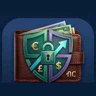

Bejirondበጅሮንድ
Bejirond·Expense Manager
Track spending across several businesses, on your own phone, in the language you actually think in.
Free · Works fully offline · Android 8.0 and up
Multiple businesses, one app
Keep separate books for each business, with team roles and reports for every one of them.
Seven languages
English, Amharic, Afaan Oromoo, Tigrinya, French, Arabic, and Swahili — switch anytime in Settings.
Nothing leaves your phone
Every book, entry, and setting is stored only on your device. No account, no server, no internet required to use it.
Built for how you already track money
Ethiopian or Gregorian calendar, Birr-first exchange rates, Telebirr/CBE Birr/M-Pesa as payment methods, and a loan calculator built in.
Download the file above
It downloads straight from GitHub, where the app is built.
Allow this install
Android will ask permission to install from this source the first time. Approve it — this is normal for apps installed outside the Play Store.
Open Bejirond and set up your first book
Pick a language and currency, then you're in.
Bejirond isn't on the Play Store yet, so this page is the way to get it for now. The app is built automatically from its source code every time it's updated, and this link always points to the newest build.
Because it's outside the Play Store, your phone may show a general warning about installing unrecognized apps — that's Android being cautious about any app from outside the Store, not a problem specific to Bejirond. The source code is public if you'd like to see exactly what's in it.
Used the app? Tell us what you think.